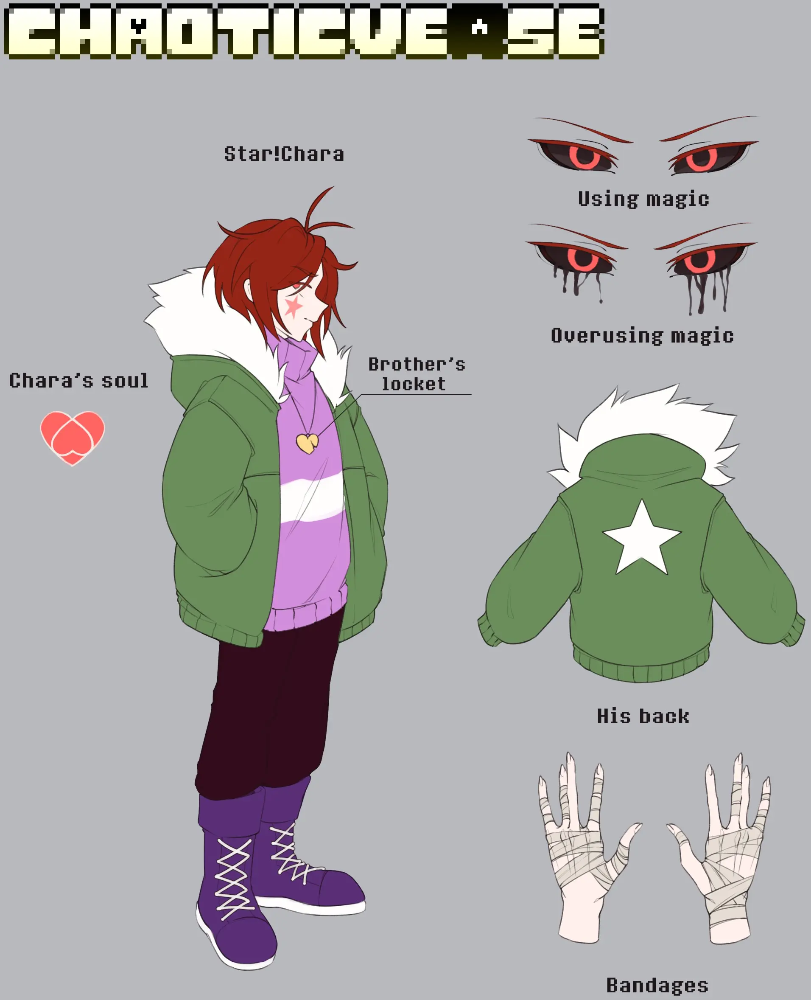
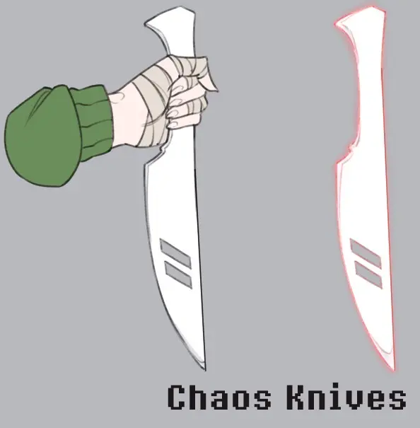
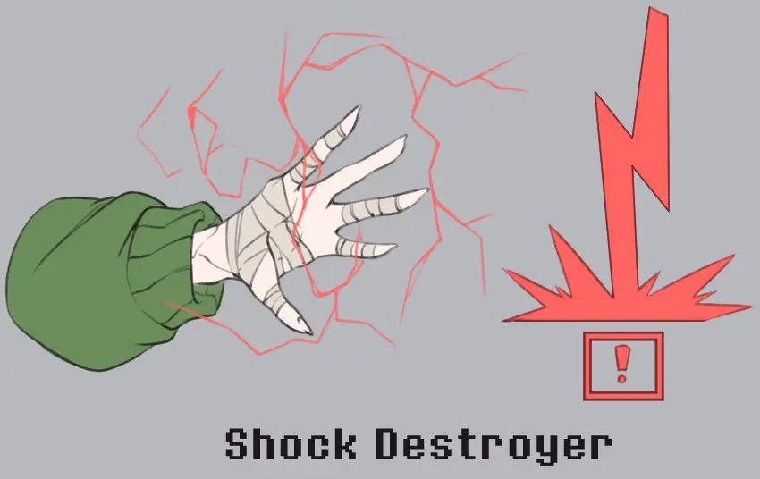
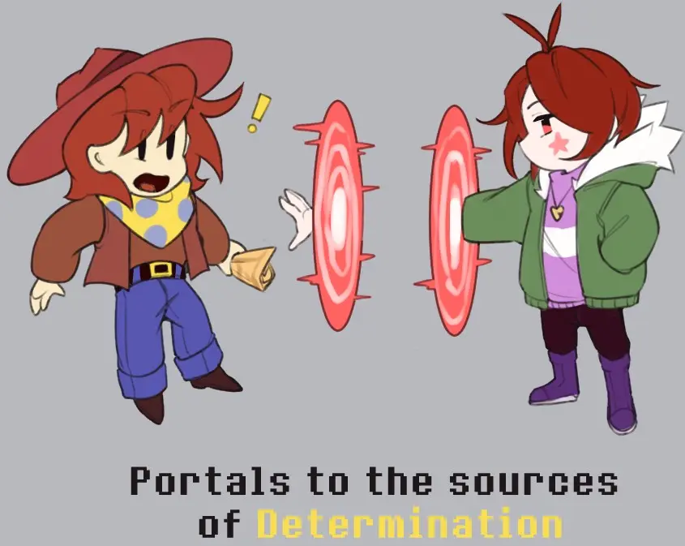
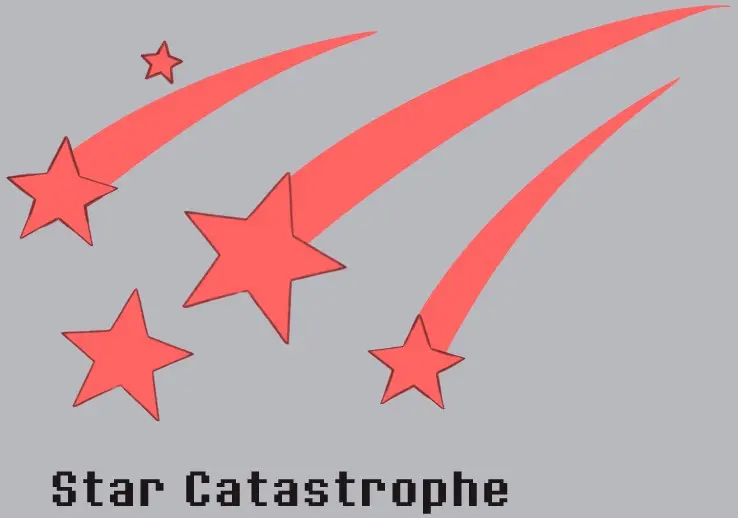

Star!Chara is a member of the royal family, a loving brother, and someone who went mad trying to bring back Asriel, who had sacrificed himself for him.
It would seem that alone should already be madness—but true madness came when he was stripped even of the chance to bring his brother back. Now everything
he dreams of is revenge on the one who took from him the dearest person in the entire multiverse.
Backstory
At first, Chara’s timeline was no different from the original Undertale story, but at some point everything went completely wrong.
The story in which both of them were meant to die was distorted, and only Chara was left alive.
Waking from sleep, Chara thought he would see his brother again—but he could not find him anywhere. As if Asriel had vanished into thin air.
When he tried to ask others where he had gone, they only shrugged, knowing no Asriel at all. The truth came out when Chara
asked his parents directly.
Asriel had never existed. In this timeline, Asgore and Toriel had never had children, and Chara was their only
adopted child. Then Chara realized that Asriel had performed a reset, sacrificing not merely himself, but his very existence. It showed in
Chara’s appearance as well. His blush marks now looked like stars, and his skin was far lighter. Moreover, magic became available to him—
a power granted only to monsters.
That news threw Chara off balance and drowned him in absolute horror at the realization that his first and
only friend in the world no longer existed. No one would remember him; no one would mourn him.
No one would ever know who Asriel was. Even Determination could not help. Trying to go back,
he only returned to the point of his awakening—never earlier. Not to the moment he fell into the underground. It seemed
there was no way out, yet Chara was not ready to accept it quietly. He wanted, no matter what, to bring his brother back.
When Chara realized it could not go on like this, he stopped holding back and no longer even hid
his intention to kill Gaster. Gaster caught him off guard and nearly killed him, holding him over the very brink of the Core.
But Chara turned the whole situation to his advantage, and instead it was Gaster who fell into the Core.
After that, Chara prepared to take radical measures, telling his family that Gaster had died. But when he gave them the news,
Toriel and Asgore only offered their condolences to Gaster’s loved ones and asked who Gaster even was. Hearing that, Chara laughed
with incredible satisfaction and realized that, just like Asriel, Gaster had been forgotten by everyone as well. Only, unlike Azzy, no one would ever bring Gaster back.
From that moment on, Chara set his plan in motion, expanding it across the entire underground.
In just 100 years, Chara turned the whole underground into a vast subterranean laboratory, and New Home became
a huge incubator where hundreds of monsters were placed in hibernation and used as test subjects for a single purpose—to bring Asriel back into this world.
Day and night, alone, Chara ran experiments on creating life, and after 10 years his work finally paid off. Asriel’s body was created,
and his soul was in the final stage of formation. All the years, efforts, and attempts had at last borne fruit, and very soon his dear brother
was meant to return to this world. At least, that is how it was supposed to be.
On the day Chara prepared to start the machine for Asriel’s full revival, his world was invaded by
the enslaver of universes — Load Glitch.
For him, everything was literally already served on a silver platter. Chara tried to stop him and even use a reset to erase him, but in that
very moment he destroyed everything Chara had lived for. He destroyed Asriel’s form, and with it Chara’s ability to reset.
There was no longer any chance to go back and start over. Load Glitch destroyed it all. In that very moment Chara
felt pure despair. He had lost his brother a second time—and now forever.
Taking advantage of Chara’s weakness, Load Glitch was about to finish him off, but then Star!Sans managed to appear, ready to stop him and save Chara.
Star!Sans had not expected Load Glitch to arrive with a huge number of subordinates, so he had no choice
but to flee in haste with Chara. Later, Star!Sans explained who he was and who Load Glitch was, and said he sympathized with Chara’s
loss—but that nothing could be done. Load Glitch’s power is so destructive that even the strongest human soul cannot change it.
Star!Sans’s original plan had been to try to drive Load Glitch out of this universe, but the difference in the number of sides and
the state that universe was in left him no such chance, and he had to flee with Chara to the Omega Timeline.
There, Star!Sans had a chance to call for help and try to save Chara’s world—but for Chara himself it no longer mattered.
Most of the monsters had become materials for creating Asriel and his soul, and the fact that he could not turn time back
meant he had no more attempts left to bring his brother back to life. Everything had lost its meaning, and Chara’s psyche began to slowly collapse.
Seeing other Asriels in the Omega Timeline, Chara started to lose his mind, wrapped in thoughts that maybe if he kidnapped others, he
could bring his brother back. But one skeleton nearby understood that Chara needed to stop winding himself up and accept what had happened as inevitable. Yes,
it is hard—but the Omega Timeline is home precisely to those who managed to overcome their past and begin a new future. Those words struck a chord with Chara, and
for the first time he began to doubt. Later, when Star!Sans returned, he asked Chara about his condition and the history of his world. Star was definitely
struck by Chara’s obsession with his brother, but he also saw his own reflection in Chara. He understood what it was like to lose loved ones, and if
he had a chance to bring them back, he might have done the same. With those thoughts, Star offered him a partnership—to stop Load Glitch together.
Chara gladly agreed: since his former goal was now impossible, only one thing remained for him—to kill Load Glitch.
From that moment on, they began to call him Star!Chara, and his path of revenge began.
Personality
Chara is a rather impulsive person. Becoming friends with him is an extremely difficult task, because he often behaves in ways
that only frighten or irritate those around him. After many years of experimenting on monsters, he has lost his social skills,
and so he can be extremely tactless and rude without even realizing it.
Even so, with such a willful nature, he has
an exceptionally brilliant mind. He excels at robotics, engineering, monster biology, the science of magic, and other sciences—except
the sciences of human behavior and thought. His intellect is comparable to that of many Gasters, which can sometimes surprise people. It is not often
that one meets a clever Chara.
As for his past actions, Chara does not regret what he did to all the monsters of his world. Yes, he admits it was
immoral and terrible, but he did it for his brother. And he has already let it go, no longer fixating on Asriel—though at times he still dreams of him,
which weighs heavily on his psyche.
Appearance

After merging with Asriel, Chara’s skin became noticeably paler, his hair redder, and his blush marks took on a star-shaped form.
His eyes have red irises and white pupils, but when he uses magic they turn black along with the pupils. If he uses
too much magic, black tears begin to stream from his eyes. Scars remain on his hands from the first clash with Load Glitch, so they are wrapped in bandages.
He always wears a heart-shaped locket, even after it was damaged. It is the last reminder of his brother.
After he teamed up with Star!Sans as a duo, he wears a pink-and-purple sweater with a white stripe down the torso, a green jacket
with fur and a star emblem on the back, dark brown trousers, and purple lace-up boots.
Abilities
Chaos Knives

They resemble Asriel Dreemurr’s Chaos Sabers, but in the form of daggers. Incredibly sharp. Chara can summon them in
large numbers, but usually uses only two. Electrically conductive.
Shock Destroyer

Similar to Shocker Breaker, it summons lightning—but exclusively red. He can fire it from his own hands at an opponent.
Portals

He can create red portals across universes, but they lead only to a source of Determination, no matter which one.
Star Catastrophe

The attack’s principle mirrors Star Blazing. A mass area attack that summons red falling stars, but with an extremely long ricochet.
Additional Information
Chara knows little about alternate Frisks, Sanses, Papyruses, Mettatons, Alphyses, and Undynes, because he never knew them in his world.
Chara feels very mixed emotions when he is near alternate versions of his brother, as well as versions of himself.
Even though Chara’s and Asriel’s souls have merged, Asriel as a person is not present in Chara’s consciousness. Any possible manifestations of Asriel
are a product of Chara’s psyche.
Chara’s IQ is 182.
In an earlier version, Star!Sans and Star!Chara were from the same universe.